Cube a Sanctuary Stone (tier I–XV) to open a sealed place. Stones stack by tier in the stash's Stones tab.


1Your first sealed place: the Fractured Halls
Collect the five Stone Fragments from the act bosses. Cube one of each in Harrogath.
- Andariel
 Khanduras Stone Fragment
Khanduras Stone Fragment- Normal
- Andariel · Normal · 100%
- Nightmare
- Andariel · Nightmare · 100%
- Hell
- Andariel · Hell · 100%
- Duriel
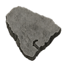
Aranoch Stone Fragment- Normal
- Duriel · Normal · 25%
- Nightmare
- Duriel · Nightmare · 37.5%
- Hell
- Duriel · Hell · 50%
- Mephisto
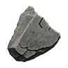
Kurast Stone Fragment- Normal
- Mephisto · Normal · 25%
- Nightmare
- Mephisto · Nightmare · 37.5%
- Hell
- Mephisto · Hell · 50%
- Diablo
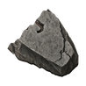
Chaos Stone Fragment- Normal
- Diablo · Normal · 25%
- Nightmare
- Diablo · Nightmare · 37.5%
- Hell
- Diablo · Hell · 50%
- Baal
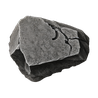
Arreat Stone Fragment- Normal
- Baal · Normal · 25%
- Nightmare
- Baal · Nightmare · 37.5%
- Hell
- Baal · Hell · 50%
- Horadric Cube
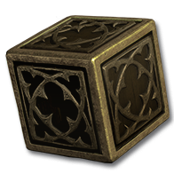
Cube all five in Harrogath: a red portal opens - The Fractured HallsArea level Normal 30 · Nightmare 64 · Hell 92
The run
- Cube five fragments in Harrogath.
- Enter the red portal.
- Hunt Ithmar the Waykeeper.
- Return by Town Portal.
Inside the Halls
- Boss: Ithmar, at the end of the longest route.
- Gems: normal / flawless / perfect, by difficulty.
- Stone I: Ithmar the Waykeeper · Hell · 25%.
Ithmar’s rewards →
The recipe consumes all five fragments. Fragments stack in the stash's Stones tab.
2Find your stones
The source list below gives Hell odds. Quest kills have separate entries.
 Sanctuary Stone I
Sanctuary Stone IWhere it drops
- Sanctuary Stone I: Stone bosses, tiers I · Hell · 88.75%
- Sanctuary Stone I: Terror Zone Heralds · Terror Zone act bosses · Hell · 50%
- Sanctuary Stone I: Baal · Diablo · Duriel · Ithmar the Waykeeper · Mephisto · Terror Zone superuniques · Hell · 25%
- Sanctuary Stone I: Terror Zone unique packs · Hell · 5%
 Sanctuary Stone II
Sanctuary Stone IIWhere it drops
- Sanctuary Stone II: Stone bosses, tiers II · Hell · 84%
- Sanctuary Stone II: Stone bosses, tiers I · Hell · 10%
 Sanctuary Stone III
Sanctuary Stone IIIWhere it drops
- Sanctuary Stone III: Stone bosses, tiers III · Hell · 84%
- Sanctuary Stone III: Echo of Mephisto (I) · Hell · 50%
- Sanctuary Stone III: Stone bosses, tiers II · Hell · 10%
 Sanctuary Stone IV
Sanctuary Stone IVWhere it drops
- Sanctuary Stone IV: Stone bosses, tiers IV · Hell · 88.75%
- Sanctuary Stone IV: Stone bosses, tiers III · Hell · 10%
- Sanctuary Stone IV: Echo of Mephisto (I) · Hell · 9.998%
 Sanctuary Stone V
Sanctuary Stone VWhere it drops
- Sanctuary Stone V: Stone bosses, tiers V · Hell · 88.75%
- Sanctuary Stone V: Stone bosses, tiers IV · Hell · 10%
 Sanctuary Stone VI
Sanctuary Stone VIWhere it drops
- Sanctuary Stone VI: Stone bosses, tiers VI · Hell · 88.75%
- Sanctuary Stone VI: Echo of Andariel · Echo of Andariel (II) · Hell · 50%
- Sanctuary Stone VI: Stone bosses, tiers V · Hell · 10%
 Sanctuary Stone VII
Sanctuary Stone VIIWhere it drops
- Sanctuary Stone VII: Stone bosses, tiers VII · Hell · 88.75%
- Sanctuary Stone VII: Stone bosses, tiers VI · Hell · 10%
- Sanctuary Stone VII: Echo of Andariel (II) · Hell · 9.994%
- Sanctuary Stone VII: Echo of Andariel · Hell · 9.992%
 Sanctuary Stone VIII
Sanctuary Stone VIIIWhere it drops
- Sanctuary Stone VIII: Stone bosses, tiers VIII · Hell · 88.75%
- Sanctuary Stone VIII: Stone bosses, tiers VII · Hell · 10%
 Sanctuary Stone IX
Sanctuary Stone IXWhere it drops
- Sanctuary Stone IX: Stone bosses, tiers IX · Hell · 88.75%
- Sanctuary Stone IX: Echo of Duriel · Echo of Duriel (III) · Hell · 50%
- Sanctuary Stone IX: Stone bosses, tiers VIII · Hell · 10%
 Sanctuary Stone X
Sanctuary Stone XWhere it drops
- Sanctuary Stone X: Stone bosses, tiers X · Hell · 88.75%
- Sanctuary Stone X: Stone bosses, tiers IX · Hell · 10%
- Sanctuary Stone X: Echo of Duriel (III) · Hell · 9.997%
- Sanctuary Stone X: Echo of Duriel · Hell · 9.996%
 Sanctuary Stone XI
Sanctuary Stone XIWhere it drops
- Sanctuary Stone XI: Stone bosses, tiers XI · Hell · 88.75%
- Sanctuary Stone XI: Stone bosses, tiers X · Hell · 10%
 Sanctuary Stone XII
Sanctuary Stone XIIWhere it drops
- Sanctuary Stone XII: Stone bosses, tiers XII · Hell · 88.75%
- Sanctuary Stone XII: Echo of Diablo · Hell · 50%
- Sanctuary Stone XII: Stone bosses, tiers XI · Hell · 10%
 Sanctuary Stone XIII
Sanctuary Stone XIIIWhere it drops
- Sanctuary Stone XIII: Stone bosses, tiers XIII · Hell · 88.75%
- Sanctuary Stone XIII: Avatar of Azmodan · Avatar of Belial · Hell · 25%
- Sanctuary Stone XIII: Stone bosses, tiers XII · Hell · 10%
- Sanctuary Stone XIII: Echo of Diablo · Hell · 9.986%
 Sanctuary Stone XIV
Sanctuary Stone XIVWhere it drops
- Sanctuary Stone XIV: Stone bosses, tiers XIV · Hell · 88.75%
- Sanctuary Stone XIV: Shade of Bartuc · Vardek the Bonebound · Hell · 25%
- Sanctuary Stone XIV: Stone bosses, tiers XIII · Hell · 10%
 Sanctuary Stone XV
Sanctuary Stone XVWhere it drops
- Sanctuary Stone XV: Stone bosses, tiers XV · Hell · 84%
- Sanctuary Stone XV: Echo of Baal · Hell · 50%
- Sanctuary Stone XV: Shade of Zoltun Kulle · Hell · 25%
- Sanctuary Stone XV: Stone bosses, tiers XIV · Hell · 10%
3Open a sealed place, then climb
Open
 Any gem, any grade
Any gem, any gradeIn Hell, cube a Sanctuary Stone with any grade of gem in Harrogath. The gem selects one of three destinations; both ingredients are consumed. Leave by Town Portal.
Upgrade
4How the tiers climb
Select a square to see its destination.
Ilevel 92floor 1
IIlevel 95floor 6
IIIlevel 97floor 10
IVlevel 98floor 11
Vlevel 99floor 14
VIlevel 100floor 20
VIIlevel 101floor 21
VIIIlevel 102floor 24
IXlevel 103floor 30
Xlevel 104floor 31
XIlevel 105floor 34
XIIlevel 106floor 40
XIIIlevel 107floor 41
XIVlevel 108floor 44
XVlevel 109floor 50
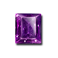
AmethystCursed GroveArchives of Zoltun KulleRubble of Viz-JunMoonless SandsHaunted Slums of KurastFires of Tristram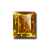
TopazBlack Canyon MinesCanyons of DahlgurGate-Halls of Lut BahadurMenagerie of FahirLost Gate of the HoradrimSinkholes of ShassarField of BonesValley of the Seventh Tomb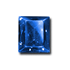
SapphireAshwold CemeterySalt Jail of StormpointMoonwood of Tur DulraHearthward WallsCrevasse of the Ice-Widow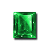
EmeraldFestering WoodsWortham BluffsUmbaru UplandsSunken Vaults of ValostreWeaving DarkMires of the Black Reeds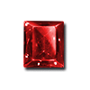
RubyReaver Quays of Gea KulSunbleached WastesBoiling PlainsFire-Vents of SkovosKhazra Dens of ZavainBroken BarricadesAshes of SescheronFire-Roots of ArreatDiamondSunken Jungle of KurastHold of the Sons of RakkisRuins of CorvusUndervaults of IvgorodShadowed Streets of UrehMirror Cathedral of InariusSkullYards of AgonyThe Butcher's ShamblesFighting Pits of Old KehjanBarrows of the Old KingsDrowned Court of the MysticCells of Hatred5Where each stone leads
Blue marks your arrival; red marks bosses. A dashed outline marks a cave that changes each visit.
Sanctuary Stone ITopaz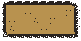
Black Canyon MinesScarabs Lightning Enchanted; Stone Skin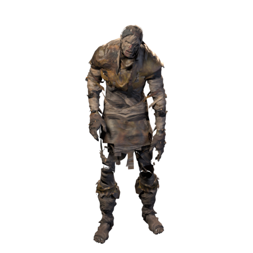
Qadir the EntombedEmerald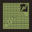
Festering WoodsShamans carry Might; Cursed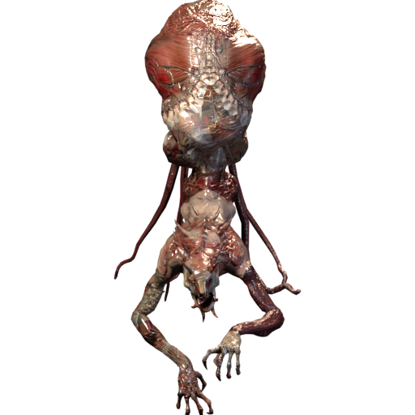
Mordrick the Blightwarden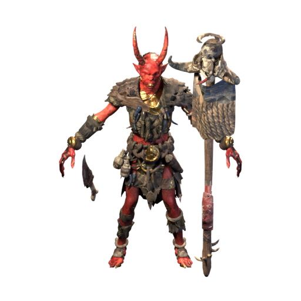
GnashrikSkull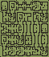
Yards of AgonySpectral Hit; Thorns aura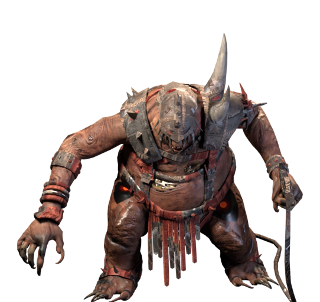
Haelric the JailerSanctuary Stone IITopaz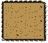
Canyons of DahlgurMagic Resistant; Holy Shock on elitesSadiq the PoisonerEmerald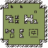
Wortham BluffsPoison-heavy; Extra Fast; elites curse Lower Resist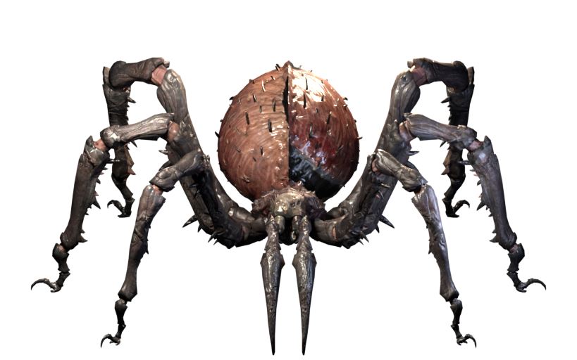
Queen AraneaeWulfric the CocoonedRubyReaver Quays of Gea KulFire Enchanted; Extra Fast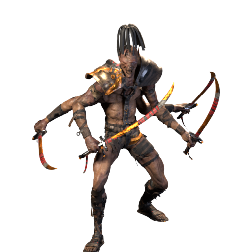
Kezzhar SaltfangSanctuary Stone IIIAmethyst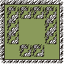
Cursed GroveBlessed Aim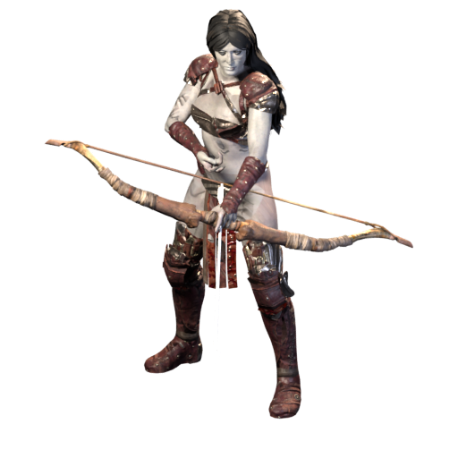
Wenna RotbowSapphire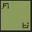
Ashwold CemeteryCold Enchanted; Might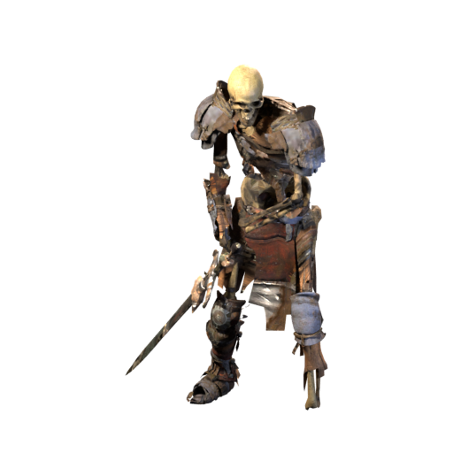
Mortlake the Grave-Keeper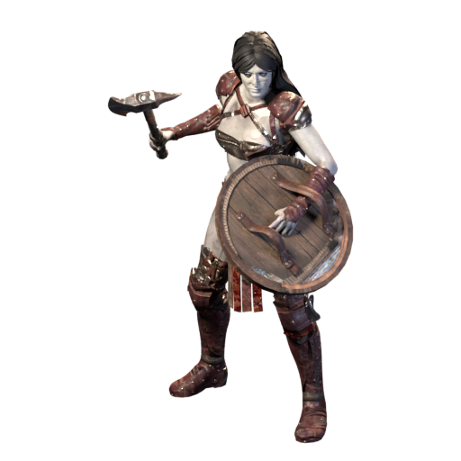
Elspeth the UnburiedDiamond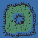
Sunken Jungle of KurastZealots carry Holy Fire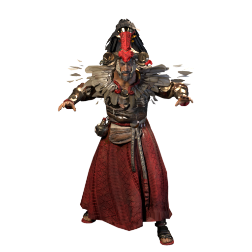
Vhassun the UnshrivenSanctuary Stone IVTopaz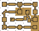
Gate-Halls of Lut BahadurExtra Strong; Fanaticism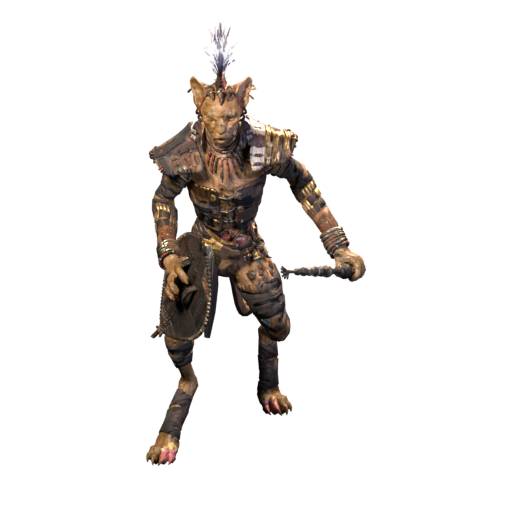
Rahkesh the Pale ClawRuby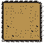
Sunbleached WastesFire Enchanted; Might; Extra FastQasirah the SunflayerSkull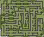
The Butcher's ShamblesTeleport; elites Mana Burn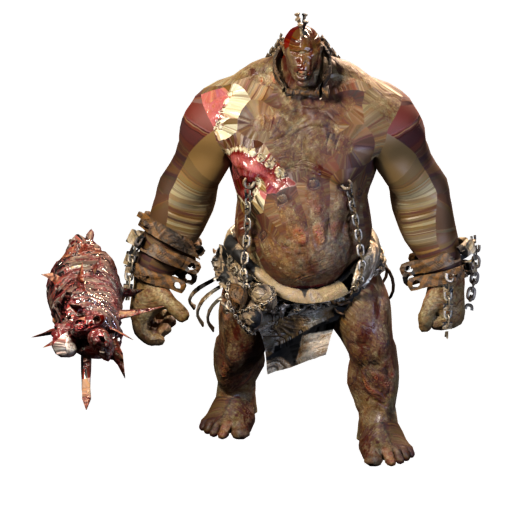
Echo of the ButcherSanctuary Stone VTopazMenagerie of FahirLightning Enchanted; Spectral Hit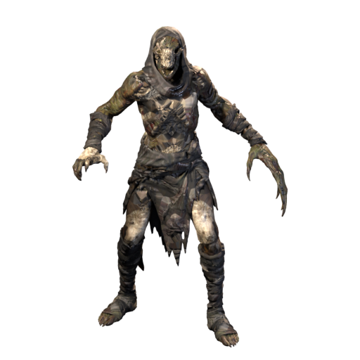
King FahirSapphire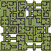
Salt Jail of StormpointCold Enchanted; Mana BurnAldous Vane the Salt-JailerEmeraldUmbaru UplandsCursed shamans; Fire Enchanted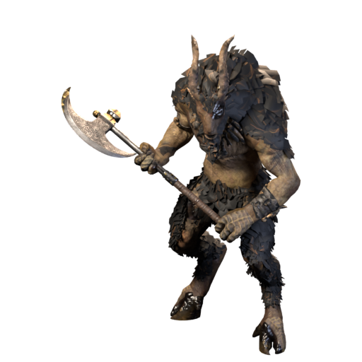
Ngozu the Bound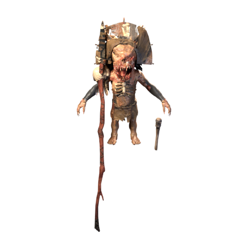
Kwazu the Doll-MakerSanctuary Stone VIAmethyst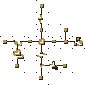
Archives of Zoltun KulleMagic Resistant; Teleport; Holy Shock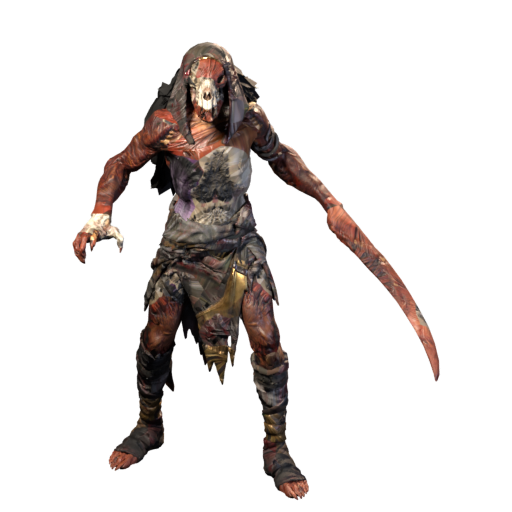
The CuratorEmerald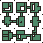
Sunken Vaults of ValostreWeaken curse; Extra FastIxtzal the Plague-DrumRubyBoiling PlainsFire Enchanted; Fire Immune elitesToghrul Saltbinder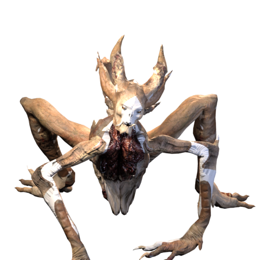
Oyuun the Ash-MotherSanctuary Stone VIIAmethyst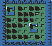
Rubble of Viz-JunMagic Resistant; Teleport; elites curse Lower Resist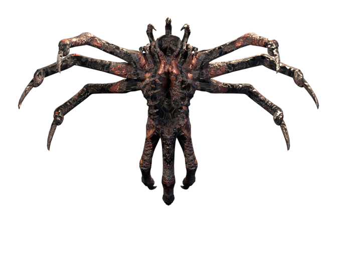
Vizier Kharos DhalEmerald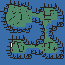
Weaving DarkPoison and Fire Enchanted; elites curse Lower ResistSsithraxa the Brood-MotherDiamondHold of the Sons of RakkisFanaticism; Holy FireSanctuary Stone VIIISapphire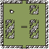
Moonwood of Tur DulraWolves Extra Fast; Might; Cold Enchanted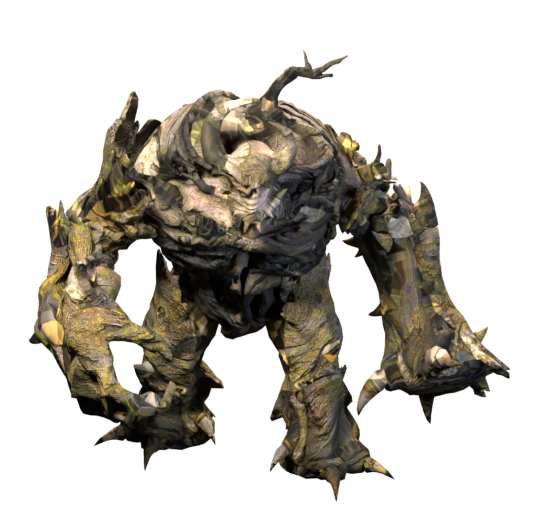
Brannoch BarkboundGrenhorn the Moon-HowlerRubyFire-Vents of SkovosFire Enchanted; Fanaticism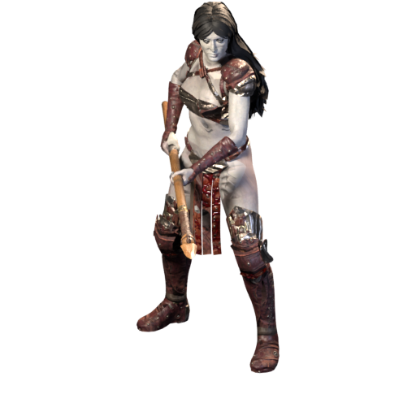
Kyrene the OathbreakerDiamondRuins of CorvusSpectral Hit; Magic ResistantThe Warder of DaedessaSanctuary Stone IXAmethystMoonless SandsSpectral Hit; Holy Freeze on elitesAncient Imhar the SleeplessSahra the Night-VeiledRubyKhazra Dens of ZavainExtra Strong; MightGharruk BloodhornSkullFighting Pits of Old KehjanExtra Strong; Might; elites curse Lower ResistKharazad the Thrice-SlainSanctuary Stone XTopazLost Gate of the HoradrimMagic Resistant; Lightning Immune elites; TeleportKeeper SharazSapphireHearthward WallsCold Enchanted; Holy FreezeGrimskar HearthbaneHrimgar the Rime-MawDiamondUndervaults of IvgorodCold Immune elites; Mana BurnVoivode Stanimir the UnthawedSanctuary Stone XITopazSinkholes of ShassarLightning Enchanted; Stone SkinZhulmeq the UndermawRubyBroken BarricadesFanaticism; MightVarkhos the SiegemasterAshkarn, Ram-Lord of DestructionDurgash, Sapper of DestructionSkullBarrows of the Old KingsStone Skin; Cold EnchantedOsgar the Barrow-KingSanctuary Stone XIIAmethystHaunted Slums of Kurastelites curse Lower Resist; Mana BurnExarch Szoreth the UnboundSapphireCrevasse of the Ice-WidowCold Immune elites; Holy FreezeZhivena the Ice-WidowEmeraldMires of the Black ReedsPoison-heavy; Weaken curse; Extra FastMother Ilka of the Black ReedsBertalan the Bog-FedSanctuary Stone XIIIRubyAshes of SescheronFanaticism; elites curse Lower Resist; packs Fire and Cold EnchantedUlfrik CinderhandRagnhild the Ash-BrideVulgrath, Torch of DestructionDiamondShadowed Streets of UrehMagic Resistant; Spectral Hit; Holy ShockSanctuary Stone XIVTopazField of BonesFire and Lightning Enchanted; elites curse Lower ResistEcho of Bartuc, Warlord of BloodHaddar the Blood-SwornSkarvath, Thrall of the WarlordDiamondMirror Cathedral of Inariuselites curse Lower Resist; elites Holy Fire, Shock and Freeze; Magic Resistant Echo of InariusSkullCells of HatredMana Burn; Cold Enchanted; elites curse Lower ResistVhastrol, Jailer of HatredPrelate Ossan the ChainedSanctuary Stone XVAmethystFires of TristramFire Immune elites; Fanaticism; elites curse Lower ResistEcho of LazarusEcho of Red VexEcho of Black JadeTopazValley of the Seventh TombLightning Immune elites; Holy Shock; Spectral HitEcho of Tal Rasha
Echo of InariusSkullCells of HatredMana Burn; Cold Enchanted; elites curse Lower ResistVhastrol, Jailer of HatredPrelate Ossan the ChainedSanctuary Stone XVAmethystFires of TristramFire Immune elites; Fanaticism; elites curse Lower ResistEcho of LazarusEcho of Red VexEcho of Black JadeTopazValley of the Seventh TombLightning Immune elites; Holy Shock; Spectral HitEcho of Tal Rasha6What each tier's bosses drop
Hell Stone bosses roll each line below. Chances below 1% also show 1 in N.
Ilevel 92floor 1
IIlevel 95floor 6
IIIlevel 97floor 10
Vlevel 99floor 14
VIlevel 100floor 20
VIIIlevel 102floor 24
IXlevel 103floor 30
Xlevel 104floor 31
XIlevel 105floor 34
XIIlevel 106floor 40
XIIIlevel 107floor 41
XIVlevel 108floor 44
XVlevel 109floor 50
 Flamebrand0.2778% (1 in 360)0.2778% (1 in 360)0.2778% (1 in 360)0.2778% (1 in 360)0.2778% (1 in 360)0.2778% (1 in 360)0.2778% (1 in 360)0.2778% (1 in 360)0.2778% (1 in 360)
Flamebrand0.2778% (1 in 360)0.2778% (1 in 360)0.2778% (1 in 360)0.2778% (1 in 360)0.2778% (1 in 360)0.2778% (1 in 360)0.2778% (1 in 360)0.2778% (1 in 360)0.2778% (1 in 360) Winterfang0.2778% (1 in 360)0.2778% (1 in 360)0.2778% (1 in 360)0.2778% (1 in 360)0.2778% (1 in 360)0.2778% (1 in 360)0.2778% (1 in 360)0.2778% (1 in 360)0.2778% (1 in 360)
Winterfang0.2778% (1 in 360)0.2778% (1 in 360)0.2778% (1 in 360)0.2778% (1 in 360)0.2778% (1 in 360)0.2778% (1 in 360)0.2778% (1 in 360)0.2778% (1 in 360)0.2778% (1 in 360) Thunderfang0.2778% (1 in 360)0.2778% (1 in 360)0.2778% (1 in 360)0.2778% (1 in 360)0.2778% (1 in 360)0.2778% (1 in 360)0.2778% (1 in 360)0.2778% (1 in 360)0.2778% (1 in 360)
Thunderfang0.2778% (1 in 360)0.2778% (1 in 360)0.2778% (1 in 360)0.2778% (1 in 360)0.2778% (1 in 360)0.2778% (1 in 360)0.2778% (1 in 360)0.2778% (1 in 360)0.2778% (1 in 360) Plaguefang0.2778% (1 in 360)0.2778% (1 in 360)0.2778% (1 in 360)0.2778% (1 in 360)0.2778% (1 in 360)0.2778% (1 in 360)0.2778% (1 in 360)0.2778% (1 in 360)0.2778% (1 in 360)
Plaguefang0.2778% (1 in 360)0.2778% (1 in 360)0.2778% (1 in 360)0.2778% (1 in 360)0.2778% (1 in 360)0.2778% (1 in 360)0.2778% (1 in 360)0.2778% (1 in 360)0.2778% (1 in 360) Gravecarver0.2778% (1 in 360)0.2778% (1 in 360)0.2778% (1 in 360)0.2778% (1 in 360)0.2778% (1 in 360)0.2778% (1 in 360)0.2778% (1 in 360)0.2778% (1 in 360)0.2778% (1 in 360)
Gravecarver0.2778% (1 in 360)0.2778% (1 in 360)0.2778% (1 in 360)0.2778% (1 in 360)0.2778% (1 in 360)0.2778% (1 in 360)0.2778% (1 in 360)0.2778% (1 in 360)0.2778% (1 in 360) Skycleaver0.2778% (1 in 360)0.2778% (1 in 360)0.2778% (1 in 360)0.2778% (1 in 360)0.2778% (1 in 360)0.2778% (1 in 360)0.2778% (1 in 360)0.2778% (1 in 360)0.2778% (1 in 360)
Skycleaver0.2778% (1 in 360)0.2778% (1 in 360)0.2778% (1 in 360)0.2778% (1 in 360)0.2778% (1 in 360)0.2778% (1 in 360)0.2778% (1 in 360)0.2778% (1 in 360)0.2778% (1 in 360) Tribunal0.2778% (1 in 360)0.2778% (1 in 360)0.2778% (1 in 360)0.2778% (1 in 360)0.2778% (1 in 360)0.2778% (1 in 360)0.2778% (1 in 360)0.2778% (1 in 360)0.2778% (1 in 360)
Tribunal0.2778% (1 in 360)0.2778% (1 in 360)0.2778% (1 in 360)0.2778% (1 in 360)0.2778% (1 in 360)0.2778% (1 in 360)0.2778% (1 in 360)0.2778% (1 in 360)0.2778% (1 in 360) Cursebearer0.2778% (1 in 360)0.2778% (1 in 360)0.2778% (1 in 360)0.2778% (1 in 360)0.2778% (1 in 360)0.2778% (1 in 360)0.2778% (1 in 360)0.2778% (1 in 360)0.2778% (1 in 360)
Cursebearer0.2778% (1 in 360)0.2778% (1 in 360)0.2778% (1 in 360)0.2778% (1 in 360)0.2778% (1 in 360)0.2778% (1 in 360)0.2778% (1 in 360)0.2778% (1 in 360)0.2778% (1 in 360) Hidden Hand0.2778% (1 in 360)0.2778% (1 in 360)0.2778% (1 in 360)0.2778% (1 in 360)0.2778% (1 in 360)0.2778% (1 in 360)0.2778% (1 in 360)0.2778% (1 in 360)0.2778% (1 in 360)
Hidden Hand0.2778% (1 in 360)0.2778% (1 in 360)0.2778% (1 in 360)0.2778% (1 in 360)0.2778% (1 in 360)0.2778% (1 in 360)0.2778% (1 in 360)0.2778% (1 in 360)0.2778% (1 in 360)| Tiers | Own | A second | Next |
|---|---|---|---|
| I–III | — | — | — |
| V–VI, VIII–XIV | 85% | 25% | 10% |
| XV | 80% | 20% | — |
- Fletcher's GraspStone bosses, tiers I–III · Hell · 0.8333% (1 in 120)
- Fletcher's KnotStone bosses, tiers I–III · Hell · 0.8333% (1 in 120)
- Fletcher's TreadStone bosses, tiers I–III · Hell · 0.8333% (1 in 120)
 Horadric Vault SigilStone bosses, tiers V–VI, VIII–XII · Hell · 3.333%
Horadric Vault SigilStone bosses, tiers V–VI, VIII–XII · Hell · 3.333% 5 SealsSinLiesBoneBloodSandStone bosses, tiers XIII–XV · Hell · 4% each
5 SealsSinLiesBoneBloodSandStone bosses, tiers XIII–XV · Hell · 4% each- Sigil of HatredStone bosses, tiers XV · Hell · 0.5% (1 in 200)
 Pentagram of ChaosStone bosses, tiers XV · Hell · 1%
Pentagram of ChaosStone bosses, tiers XV · Hell · 1%- Girdle of the Far OasisStone bosses, tiers V–VI, VIII–XV · Hell · 0.4167% (1 in 240)
- Hide of the Bound ElderStone bosses, tiers V · Hell · 1.667% · Stone bosses, tiers VI, VIII–XV · Hell · 0.4167% (1 in 240)
- FlamebrandStone bosses, tiers V–VI, VIII–XIV · Hell · 0.2778% (1 in 360)
- WinterfangStone bosses, tiers V–VI, VIII–XIV · Hell · 0.2778% (1 in 360)
- ThunderfangStone bosses, tiers V–VI, VIII–XIV · Hell · 0.2778% (1 in 360)
- PlaguefangStone bosses, tiers V–VI, VIII–XIV · Hell · 0.2778% (1 in 360)
- GravecarverStone bosses, tiers V–VI, VIII–XIV · Hell · 0.2778% (1 in 360)
- SkycleaverStone bosses, tiers V–VI, VIII–XIV · Hell · 0.2778% (1 in 360)
- TribunalStone bosses, tiers V–VI, VIII–XIV · Hell · 0.2778% (1 in 360)
- CursebearerStone bosses, tiers V–VI, VIII–XIV · Hell · 0.2778% (1 in 360)
- Hidden HandStone bosses, tiers V–VI, VIII–XIV · Hell · 0.2778% (1 in 360)
- Valostre's RotStone bosses, tiers VI, VIII–XV · Hell · 0.4167% (1 in 240)
- Tide of the Twin SeasStone bosses, tiers VIII · Hell · 1.667% · Stone bosses, tiers IX–XV · Hell · 0.4167% (1 in 240)
- Moonwood Pack-BondStone bosses, tiers VIII · Hell · 1.667% · Stone bosses, tiers IX–XV · Hell · 0.4167% (1 in 240)
- Vosse's Last MarchStone bosses, tiers VIII–XV · Hell · 0.4167% (1 in 240)
- Kharazad's CestusStone bosses, tiers IX · Hell · 1.667% · Stone bosses, tiers X–XV · Hell · 0.4167% (1 in 240)
- Harrogath's Long WinterStone bosses, tiers X · Hell · 1.667% · Stone bosses, tiers XI–XV · Hell · 0.4167% (1 in 240)
- BriarfeverStone bosses, tiers X–XII · Hell · 0.1667% (1 in 600)
- Varkhos' WallbreakerStone bosses, tiers XI · Hell · 1.667% · Stone bosses, tiers XII–XV · Hell · 0.4167% (1 in 240)
- Tooth of the SeracStone bosses, tiers XII · Hell · 1.667% · Stone bosses, tiers XIII–XV · Hell · 0.4167% (1 in 240)